소방설비산업기사(기계) (2012-09-15 기출문제)
1과목: 소방원론
1. 물과 반응하여 가연성인 아세틸렌 가스를 발생시키는 것은?
- 칼슘
- 아세톤
- 마그네슘
- 탄화칼슘
(정답률: 64%)

2. B급 화재에 해당하지 않는 것은?
- 목탄의 연소
- 등유의 연소
- 아마인유의 연소
- 알코올류의 연소
(정답률: 81%)
3. 다음 중 제4류 위험물이 아닌 것은?
- 가솔린
- 메틸알코올
- 아닐린
- 트리니트로톨루엔
(정답률: 66%)
4. 점화원이 될 수 없는 것은?
- 충격마찰
- 대기압
- 정전기불꽃
- 전기불꽃
(정답률: 86%)
5. 불타고 있는 유류화재 표면을 포소화약제로 덮어 소화하는 주된 소화법은?
- 냉각소화
- 질식소화
- 연료제거 소화
- 연쇄반응차단 소화
(정답률: 72%)
6. 제3종 분말소화약제의 주성분에 해당하는 것은?
- NH4H2PO4
- NaHCO3
- KHCO3+(NH2)2CO
- KHCO3
(정답률: 80%)
7. 이산화탄소가 소화약제로 사용되는 장점으로 옳지 않은 것은?
- 단위 부피당의 무게가 공기보다 가볍다.
- 화학적으로 안정된 물질이다.
- 불연성이다.
- 전기 절연성이다.
(정답률: 66%)
8. 연소범위에 대한 설명 중 틀린 것은?
- 연소범위에는 상한값과 하한값이 있다.
- 온도가 올라가면 연소범위는 넓어진다.
- 연소범위가 좁을수록 폭발의 위험이 크다.
- 연소범위는 압력의 영향을 받는다.
(정답률: 69%)
9. 표준상태에서 44.8m3의 용적을 가진 이산화탄소가스를 모두 액화하면 몇 kg 인가?
- 88
- 44
- 22
- 11
(정답률: 43%)
10. 건축물의 주요 구조부에 해당하는 것은?
- 작은 보
- 옥외 계단
- 지붕틀
- 최하층 바닥
(정답률: 64%)
11. 0℃ 얼음의 용융잠열과 100℃ 물의 증발잠열을 옳게 나타낸 것은?
- 1cal/g, 22.4cal/g
- 1cal/g, 539cal/g
- 80cal/g, 22.4cal/g
- 80cal/g, 539cal/g
(정답률: 71%)
12. 인화점(flash Point)을 가장 옳게 설명한 것은?
- 가연성 액체가 증기를 계속 발생하여 연소가 지속될 수 있는 최저온도
- 가연성 증기 발생시 연소범위의 하한계에 이르는 최저온도
- 고체와 액체가 평형을 유지하며 공존할 수 있는 온도
- 가연성 액체의 포화증기압이 대기압과 같아지는 온도
(정답률: 52%)
13. LPG의 특성 중 옳지 않은 것은?
- 기체 비중이 공기보다 무겁다.
- 순수한 LPG는 강한 자극적 냄새를 가지고 있다.
- 상온, 상압에서 기체이다.
- 액체상태의 LPG가 기화하면 체적이 증가한다.
(정답률: 58%)
14. 코크스의 일반적인 연소형태에 해당하는 것은?
- 분해연소
- 증발연소
- 표면연소
- 자기연소
(정답률: 71%)
15. 제3류 위험물 중 금수성 물질에 해당하는 것은?
- 유황
- 탄화칼슘
- 황린
- 이황화탄소
(정답률: 64%)
16. 장기간 방치하면 습기, 고온 등에 의해 분해가 촉진되고, 분해열이 축적되면 자연발화 위험성이 있는 것은?
- 셀룰로이드
- 질산나트륨
- 과망간산칼륨
- 과연소산
(정답률: 79%)
17. 산소의 공급이 원활하지 못한 화재실에 급격히 산소가 공급이 될 겨우 순간적으로 연소하여 화재가 폭풍을 동반하여 실외로 분출하는 현상은?
- 후래쉬 오버
- 보일 오버
- 백 드래프트
- 슬롭 오버
(정답률: 77%)
18. 공기 중의 산소는 용적으로 약 몇 % 정도 인가?
- 15
- 21
- 28
- 32
(정답률: 84%)
19. 가연물이 서서히 산화되어 축적된 열에 의해 발화하는 현상을 무엇이라 하는가?
- 분해연소
- 자기연소
- 자연발화
- 폭굉
(정답률: 68%)
20. 안전을 위해서 물속에 저장하는 물질은?
- 나트륨
- 칼륨
- 이황화탄소
- 과산화나트륨
(정답률: 72%)
2과목: 소방유체역학
21. 그림과 같이 수평관에서 2개소의 압력 차를 측정하기 위해 하부에 수은을 넣은 U자관을 부착시켰다. 이 때 U자관에서 수은의 높이차 h=500mm 이었다면 압력차 P1-P2는 약 몇 kPa인가?
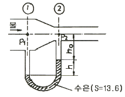
- 66.6
- 61.7
- 60.5
- 50.4
(정답률: 43%)
22. 성능이 같은 펌프 두 대를 병렬 운전할 경우 옳은 것은? (단, 손실은 무시한다.)
- 유량이 2배로 된다.
- 양정이 2배로 된다.
- 유량과 양정 모두 2배로 된다.
- 유량은 2배로 되지만 양정은 반으로 준다.
(정답률: 66%)
23. 그림과 같이 속도 3m/s로 운동하는 평판에 속도 10m/s인 물 분류가 직각으로 충돌하고 있다. 분류의 단면적이 0.01m2으로 일정하다고 하면 평판이 받는 힘은 몇 N인가?
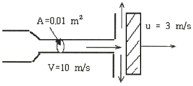
- 98
- 490
- 700
- 1000
(정답률: 68%)
24. 전양정 20m, 질량유량 150kg/s로 물을 송출할 때 소요되는 펌프의 축동력(shaft power)이 42kW이면 펌프의 효율(%)은?
- 70
- 74
- 76
- 80
(정답률: 47%)
25. 이상유체에 대한 설명으로 옳은 것은?
- 점성이며, 압축성 유체
- 비점성이며, 압축성 유체
- 점성이며, 비압축성 유체
- 비점성이며, 비압축성 유체
(정답률: 64%)
26. 밑면이 8m×3m, 깊이가 4m인 철제 상자가 물 위에 떠있다. 상자의 무게를 196kN이라 할 때 이 상자는 물속 몇 m 깊이까지 들어가 있는가?
- 0.83
- 0.91
- 0.98
- 1.04
(정답률: 29%)
27. 질량보존의 법칙으로부터 유도된 방정식은?
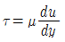
- pv=RT
- ρ1A1v1=ρ2A2v2
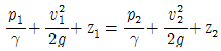
(정답률: 49%)
28. 다음 중 무차원수에 대한 물리적 의미가 틀린 것은?
- 레이놀즈수=관성력/점성력
- 오일러수=압력/관성력
- 웨버수=관성력/점성력
- 코시수=관성력/탄성력
(정답률: 55%)
29. 고체 표면의 온도가 15℃에서 25℃로 올라가면 방사되는 복사열은 약 몇 %가 증가하는가?
- 3.5
- 7.1
- 15
- 67
(정답률: 43%)
30. 그림과 같이 출구가 수직방향으로 향하는 원관에서 물이 유출되어 떨어지고 있다. 원관의 내경은 10cm, 출구에서 유속이 1.4m/s 일 때 손실을 무시하면 출구보다 1.5m 아래에서 물기둥의 직경은 약 몇 cm 인가?
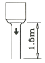
- 10
- 9
- 7
- 5
(정답률: 31%)
31. 체적 0.5m3, 절대 압력 1300kPa인 탱크에 25℃의 기체 10kg이 들어있다. 이 기체의 기체상수는 약 몇 kJ/kg·K 인가?
- 0.19
- 0.22
- 0.26
- 0.29
(정답률: 43%)
32. 어떤 유체의 비중량(N/m3)이 A이고 점성계수(N·s/m2)가 B이다. 동점성계수(m2/s)는? (단, g는 중력가속도이다.)
- Bg/A
- B/Ag
- Ag/B
- A/Bg
(정답률: 40%)
33. 수조의 수면으로부터 20m 아래에 설치된 직경 4cm의 오리피스에서 1분간 분출된 유량은 약 몇 m3인가? (단, 수심은 일정하게 유지된다고 가정하고 오리피스의 유량계수 C=0.98로 하며 다른 조건은 무시한다.)
- 1.46
- 2.46
- 3.46
- 4.86
(정답률: 33%)
34. 어떤 액체의 체적이 10m3일 때 질량이 8800kg이었다. 이 액체의 비중은 얼마인가?
- 0.88
- 0.45
- 0.98
- 1.13
(정답률: 59%)
35. 밑면은 한 변의 길이가 1m인 정사각형이고 높이 1.5m인 직육면체 탱크에 물을 가득 채웠다. 한쪽 측면에 작용하는 힘은 몇 kN 인가?
- 14.7
- 11.0
- 22.1
- 7.4
(정답률: 30%)
36. 부차적손실이
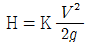
인 관의 상당길이 Le는? (단, d는 관지름, f는 관마찰계수, K는 부차손실계수)- K·d/f
- f/K·d
- f·K/d
- d/f·K
(정답률: 58%)
37. 다음은 어떤 열역학적 법칙을 설명한 것인가?
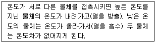
- 열역학 제 3법칙
- 열역학 제 2법칙
- 열역학 제 1법칙
- 열역학 제 0법칙
(정답률: 42%)
38. 수평으로 설치된 안지름 D, 길이 L의 곧은 원관 내에 체적 유량 Q의 유체가 흐를 때 손실 수두는? (단, 관마찰계수는 f이고 중력 가속도는 g이다.)
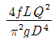
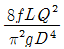
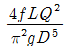
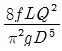
(정답률: 40%)
39. 공기 1kg을 절대압력 100kPa, 체적 0.85m3의 상태로부터 절대압력 500kPa, 온도 300℃로 변환시켰다면, 상승된 온도는 얼마인가? (단, 공기의 기체상수는 287J/kg·K이다.)
- 0℃
- 277℃
- 296℃
- 376℃
(정답률: 47%)
40. 다음 설명 중 틀린 것은?
- 흡입배관에서의 마찰손실 수두를 작게 하면 펌프의 공동현상을 방지할 수 있다.
- 배관의 직경을 크게 하고 유속을 낮게 하면 수격작용을 방지할 수 있다.
- 흡수면에서 최상층 송출 수면까지의 수직거리를 전양정이라 한다.
- 특성이 같은 원심펌프 2대를 직렬로 설치하면 양정을 높일 수 있다.
(정답률: 49%)
3과목: 소방관계법규
41. 일반음식점에서 음식조리를 위해 불을 사용하는 설비를 설치하는 경우 지켜야 하는 사항으로 옳지 않은 것은?
- 주방시설에 동물 또는 식물의 기름을 제거할 수 있는 필터를 설치하였다.
- 열이 발생하는 조리기구를 선반으로부터 0.6[m]떨어지게 설치하였다.
- 주방설비에 부속된 배기닥트 재질을 0.2[mm] 아연도금 강판으로 사용하였다.
- 가연성 주요 구조부를 단열성이 불연 재료로 덮어 씌웠다.
(정답률: 63%)
42. 소방안전교육사의 배치 대상별 배치기준으로 옳지 않은 것은?
- 소방방재청 : 2명 이상 배치
- 소방본부 : 2명 이상 배치
- 소방서 : 1명 이상 배치
- 한국소방안전협회(본회) : 1명 이상 배치
(정답률: 58%)
43. 소방안전교육사가 수행하는 소방안전교육의 업무에 직접적으로 해당되지 않는 것은?
- 소방안전교육의 분석
- 소방안전교육의 기획
- 소방안전관리자 양성교육
- 소방안전교육의 평가
(정답률: 55%)
44. 소방기본법상 도시의 건물밀집지역 등 화재가 발생할 우려가 높은 지역을 화재경계지구로 지정할 수 있는 사람으로 옳은 것은?
- 소방방재청장
- 소방본부장 또는 소방서장
- 행정안전부장관
- 시·도지사
(정답률: 73%)
45. 다음 중 2급 소방안전관리대상물의 소방안전관리자의 선임대상으로 부적합한 것은?
- 위험물산업기사 또는 위험물기능사 자격을 가진 사람
- 소방공무원으로 3년 이상 근무한 경력이 있는 사람
- 경찰공무원으로 2년 이상 근무한 경력이 있는 사람
- 산업안전산업기사 또는 전기산업기사 자격을 가진 사람
(정답률: 77%)
46. 제4류 위험물의 적응 소화설비와 가장 거리가 먼 것은?
- 옥내소화전설비
- 물분무소화설비
- 포소화설비
- 할로겐화합물소화설비
(정답률: 53%)
47. 다음 중 화재의 조사에 대한 내용 중 틀린 것은?
- 소방공무원과 국가경찰공무원은 화재조사를 할 때에는 서로 협력하여야 한다.
- 소방방재청장, 소방본부장, 소방서장은 화재가 발생한 때에는 화재의 원인 및 피해 등에 대한 조사를 하여야 한다.
- 소방방재청장은 수사기관이 방화 또는 실화의 혐의가 있어서 증거물을 압수한 때에는 화재조사를 위하여 압수된 증거물에 대한 조사를 할 수 있다.
- 화재조사의 방법 및 전담조사반의 운영과 화재조사자의 자격 등 화재조사에 관하여 필요한 사항은 대통령령으로 정한다.
(정답률: 63%)
48. 상주 공사감리를 하여야 하는 특정소방대상물의 일반적인 연면적 기준은? (단, 아파트는 제외한다.)
- 연면적 5000[m2]이상
- 연면적 1만[m2]이상
- 연면적 2만[m2]이상
- 연면적 3만[m2]이상
(정답률: 45%)
49. 다음의 특정소방대상물 중 근린생활시설에 해당되는 것은?
- 바닥면적의 합계가 1500[m2]인 슈퍼마켓
- 바닥면적의 합계가 1200[m2]인 자동차영업소
- 바닥면적의 합계가 450[m2]인 골프연습장
- 바닥면적의 합계가 400[m2]인 공연장
(정답률: 62%)
50. 다음 중 경보설비에 해당하는 것은?
- 무선통신보조설비
- 비상방송설비
- 비상콘센트설비
- 연소방지설비
(정답률: 78%)
51. 다음 중 과태료 부과 대상이 아닌 것은?
- 소방안전관리자를 선임하지 아니한 자
- 소방훈련 및 교육을 실시하지 아니한 자
- 피난시설, 방화구획 또는 방화시설의 폐쇄·훼손변경 등의 행위를 한자
- 소방시설 등의 점검결과를 보고하지 아니한 자
(정답률: 35%)
52. 다음 중 종합정밀점검 점검자의 자격에 해당되지 않는 것은?
- 소방시설관리사가 참여한 경우의 소방시설관리업자
- 소방안전관리자로 선임된 소방시설관리사
- 소방안전관리자로 선임된 소방기술사
- 소방안전관리자로 선임된 소방설비기사
(정답률: 40%)
53. 소방시설공사업자가 착공신고한 사항 가운데 중요한 사항이 변경된 경우에 변경신고서를 소방서장 또는 소방본부장에게 변경일로부터 며칠 이내에 신고하여야 하는가?
- 30일
- 14일
- 10일
- 7일
(정답률: 41%)
54. 다음 중 개구부에 관한 사항으로 옳지 않은 것은?
- 개구부의 크기가 반지름 30[cm]이상의 원이 내접할 수 있을 것
- 해당 층의 바닥면적으로부터 개구부 밑부분까지 높이가 1.2[m]이내일 것
- 개구부는 도로 또는 차량의 진입이 가능한 빈터를 향할 것
- 화재시 건축물로부터 쉽게 피난할 수 있도록 창살 그 밖의 장애물이 설치되어 있지 않을 것
(정답률: 64%)
55. 소방력(消防力)의 기준에 관한 사항으로 옳지 않은 것은?
- 소방기관이 소방업무를 수행하는데 필요한 인력과 장비 등에 관한 기준이다.
- 소방본부장은 관할구역 내의 소방력 확충을 위하여 필요한 계획을 수립 시행한다.
- 소방자동차 등 소방장비의 분류·표준화와 그 관리에 관한 사항이 포함된다.
- 소방력의 기준은 행정안전부령으로 정한다.
(정답률: 32%)
56. 소방시설 등록사항의 변경시 시·도지사에게 신고해야 할 사항이 아닌 것은?
- 명칭·상호 또는 영업소의 소재지 변경
- 자산규모 변경
- 기술인력 변경
- 대표자 변경
(정답률: 67%)
57. 소화설비, 경보설비, 피난설비, 소화용수설비, 소화활동설비 등을 총칭하는 용어로 규정된 것은?
- 방화시설
- 소방시설
- 소화시설
- 방재시설
(정답률: 55%)
58. 소방안전관리대상물의 관계인이 소방안전관리자를 선임한 때에는 선임한 날부터 며칠 이내에 관할 소방본부장 또는 소방서장에게 신고하여야 하는가?
- 7일
- 14일
- 21일
- 30일
(정답률: 56%)
59. 소방시설업(설계, 감리업 등)에 대한 설명으로 옳은 것은?
- 등록사항의 변경은 소방본부장 또는 소방서장에게 한다.
- 감리결과의 보고는 소방본부장 또는 소방서장에게 공사가 완료된 날로부터 30일 이내에 하여야 한다.
- 소방감리업자가 등록이 취소된 경우에는 그 처분 내용을 지체 없이 발주자에게 통보하여야 한다.
- 소방시설의 구조 및 원리 등에서 공법 등에서 특수한 설계인 경우 한국소방산업기술원에 심의를 요청한다.
(정답률: 57%)
60. 소방시설설치유지 및 안전관리에 관한 법률시행령에서 규정하는 소방용품 중 소화설비를 구성하는 제품 또는 기기에 해당하지 않는 것은?
- 방염제
- 수동식 소화기
- 소방호스
- 송수구
(정답률: 54%)
4과목: 소방기계시설의 구조 및 원리
61. 대형소화기에 해당되는 소화약제량으로 옳은 것은?
- 강화액 : 50ℓ
- 기계포 : 15ℓ
- CO2 : 40kg
- 분말 : 30kg
(정답률: 45%)
62. 66,000V이하의 고압의 전기기기가 있는 장소에 물분무헤드를 설치할 경우, 전기기기와 물분무헤드 사이에 얼마 이상의 거리를 두고 설치하여야 하는가?
- 0.7m
- 1.1m
- 1.8m
- 2.6m
(정답률: 56%)
63. 포소화설비의 소화수 원액혼합방식 중 원액탱크 내부에 소화수 원액 격막(bladder)을 설치하여 포소화설비 작동시 소화수 자체압력으로 혼합 공급하는 방식은?
- 프레져(pressure) 푸로포셔너 방식
- 프레져사이드(pressure side) 푸로포셔너 방식
- 밸런스드(balanced) 푸로포셔너 방식
- 라인(line) 푸로포셔너 방식
(정답률: 48%)
64. 분말소화설비의 배관에 대한 기준이 틀린 것은?
- 동관을 사용하는 경우 최고사용압력의 1.5배 이상의 압력에 견딜 수 있어야 한다.
- 분말소화설비배관은 전용배관으로 한다.
- 밸브류는 개폐위치를 표시한다.
- 축압식의 경우 20℃에서 압력이 2.5MPa 이상 4.2MPa 이하인 것에 있어서는 압력배관용 탄소강관 중 이음이 없는 스케줄 20 이상을 사용한다.
(정답률: 68%)
65. 물분무 소화설비의 소화 특징이 아닌 것은?
- 증기로 되면 체적이 약 1650배로 팽창하고 연소면을 덮어 산소를 차단한다.
- 유면의 표면에 불연성이 유화(에멀젼)층을 만든다.
- 물방울이 작고 냉각효과가 좋다.
- 물에 심하게 반응하는 물질에 상당히 효과적으로 제압한다.
(정답률: 67%)
66. 스프링클러소화설비의 펌프와 토출측의 체크밸브 사이의 입상관에 반드시 설치되어야 하는 것은?
- 압력계
- 진공계
- 스트레이너
- 압력챔버
(정답률: 73%)
67. 피난기구 설치대상의 기준으로 정확한 것은?(오류 신고가 접수된 문제입니다. 반드시 정답과 해설을 확인하시기 바랍니다.)
- 4층 이상 15층 이하
- 4층 이상 12층 이하
- 4층 이상 10층 이하
- 4층 이상 8층 이하
(정답률: 50%)
68. 호스릴옥내소화전설비의 노즐선단의 방수량은 몇 L/min 이상인가?
- 60
- 80
- 130
- 260
(정답률: 50%)
69. 다음은 특별피난계단의 계단실 및 부속실 제연설비에 관한 화재안전기준이다. 틀린 것은?
- 제연설비가 가동되었을 때, 출입구의 개방에 필요한 힘은 110N 이하로 하여야 한다.
- 보충량은 부속실의 수가 20 이하는 1개층 이상, 20을 초과하는 경우에는 2개층 이상의 보충량으로 한다.
- 급기구는 급기용 수직풍도와 직접 면하는 벽체 또는 천장에 설치해야 한다.
- 급기구는 옥내와 면하는 출입문으로부터 가능한 가까운 위치에 설치하여야 한다.
(정답률: 54%)
70. 바닥면적이 10,000m2 인 방호공간에 폐쇄형 스프링클러 소화설비를 설치할 경우 몇 개의 습식 유수검지장치가 필요한가?
- 3개
- 4개
- 5개
- 2개
(정답률: 52%)
71. 연결송수관설비의 가압송수장치를 수동스위치의 조작에 의해 기동되도록 하고자 한다. 이 때 수동스위치의 설치기준 중 맞는 것은?
- 수동스위치는 감시제어반과 동력제어반에 설치하여야 한다.
- 수동스위치는 감시제어반을 포함하여 2개 이상의 장소에 설치하여야 한다.
- 수동스위치는 송수구 부근을 포함하여 2개 이상의 장소에 설치하여야 한다.
- 수동스위치는 3개 이상 설치하여야 한다.
(정답률: 32%)
72. 스프링클러 설비의 배관에 대한 설명으로 틀린 것은?
- 성능시험배관은 펌프의 토출측에 설치된 체크밸브 이전에서 분기한다.
- 습식스프링클러설비 또는 부압식 스프링클러설비 외의 설비에는 헤드를 향하여 상향으로 수평주행배관의 기울기를 1/500 이상으로 한다.
- 급수배관에 설치되는 탬퍼스위치는 감시제어반 또는 수신기에서 동작의 유무 확인을 할 수 있어야 한다.
- 주차장의 스프링클러 설비는 습식 이외의 방식으로 한다.
(정답률: 42%)
73. 호스릴분말소화설비에 있어서 하나의 노즐에 대한 소화약제의 종별에 따른 기준량으로 적합하지 않은 것은?
- 제1종 분말 : 50kg
- 제2종 분말 : 40kg
- 제3종 분말 : 30kg
- 제4종 분말 : 20kg
(정답률: 67%)
74. 제연설비에서 배출풍도 단면의 직경이 300mm 인 경우에 배출풍도 강판두께 기준은?
- 0.5 mm 이상
- 0.8mm 이상
- 1.0mm 이상
- 1.3mm 이상
(정답률: 60%)
75. 축압식 분말소화기에는 소화기 내부의 압력을 확인하기 위하여 압력계가 부착되어 있다. 국내에서 제조되는 축압식 분말소화기의 지시압력계에 표시된 정상 사용압력 범위는?
- 0.6~0.9 MPa
- 0.7~0.9 MPa
- 0.6~0.98 MPa
- 0.7~0.98 MPa
(정답률: 63%)
76. 포소화설비용 송수구의 설치에 대한 설명이다. 틀린 것은?
- 송수구는 소화작업에 지장을 주지 않는 장소에 설치한다.
- 송수구는 송수압력범위를 표시한 표지를 설치한다.
- 송수구는 구경 40mm 이상의 쌍구형으로 설치한다.
- 송수구의 자동배수밸브는 배수로 인하여 피해를 주지 않는 장소에 설치한다.
(정답률: 70%)
77. 다음 중 피난기구의 화재안전기준에서 사용하는 용어의 정의에 포함하는 피난기구는?
- 공기안전매트
- 방열복
- 공기호흡기
- 인공소생기
(정답률: 64%)
78. 불연성가스 소화설비 또는 분말소화설비에서 국소 방출방식에 대한 가장 적합한 설명은?
- 고정시킨 분사헤드로 화재가 발생한 방호대상물에만 직접 소화제를 분사하는 방식이다.
- 내화구조 등의 벽으로 구획된 부분을 1개의 방호대상물로 고정시킨 헤드로 직접 소화제를 분사하는 방식이다.
- 호스의 선단에 취부된 노즐을 이동해서 방호대상물에 직접 소화제를 분사하는 방식이다.
- 소화약제 노즐 등을 적재한 차량으로 방호대상물에 접근해서 직접 방호대상물에 소화제를 분사하는 방식이다.
(정답률: 49%)
79. 지상 5층인 사무실용도의 소방대상물에 연결송수관설비를 설치할 경우 최소로 설치할 수 있는 방수구의 수는? (단, 방수구는 각 층별 1개의 설치로 충분하고, 소방차 접근이 가능한 피난층은 1개층이다.)
- 2개
- 3개
- 4개
- 5개
(정답률: 48%)
80. 이산화탄소 소화설비 저압저장용기 방식 중 용기는 자동냉동기를 설치하여 일정온도 및 압력을 유지하여야 한다. 이 때 온도와 압력의 기준은?
- -18℃ 이하에서 약 1.2 MPa 이상
- -18℃ 이하에서 약 2.1 MPa 이상
- -20℃ 이하에서 약 1 MPa 이상
- -5℃ 이하에서 약 2.1 MPa 이상
(정답률: 67%)